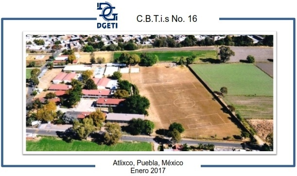
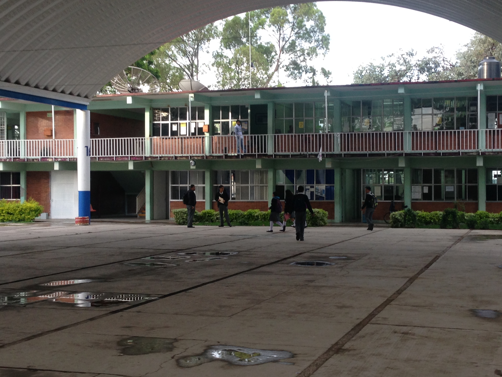
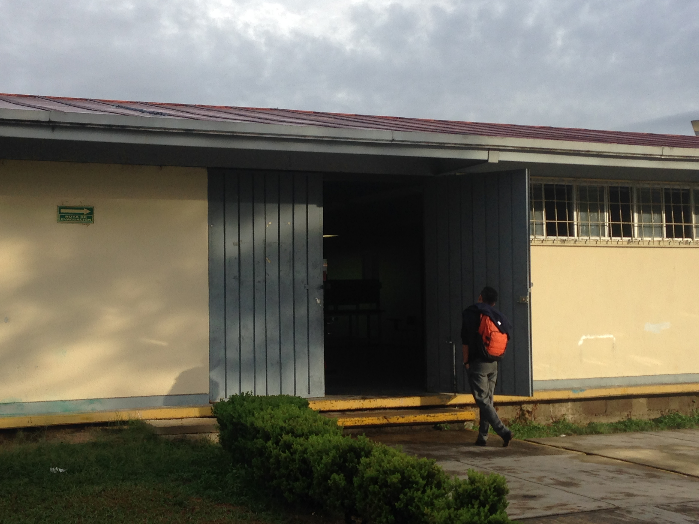
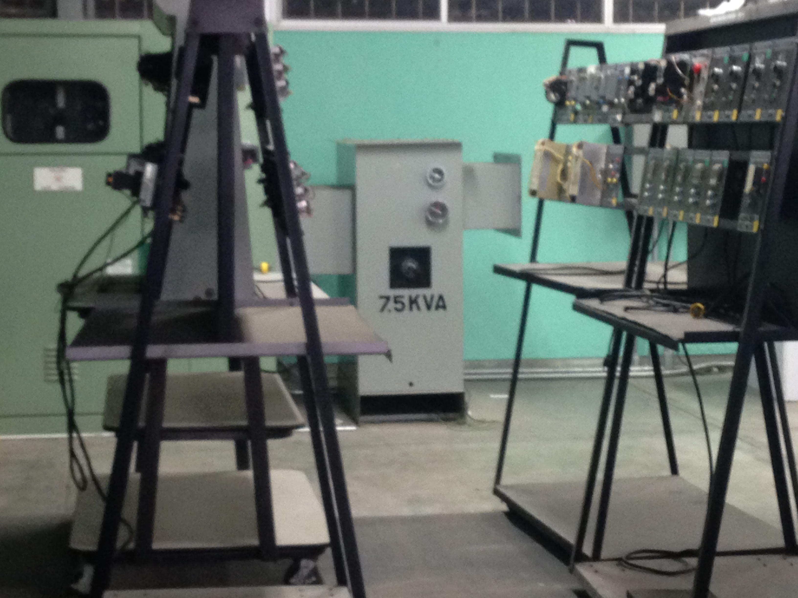
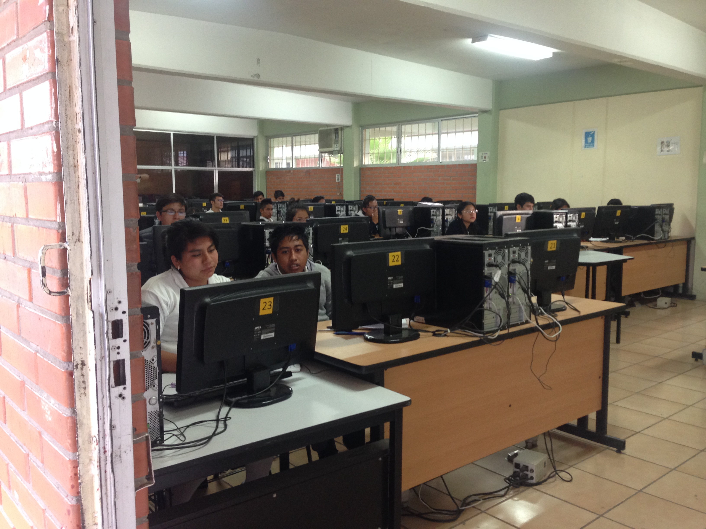

El Centro de Bachillerato Tecnológico industrial y de servicios No.16 es una institución de Educación Tecnológica de Nivel Medio Superior dependiente de la Dirección General de Educación Tecnológica Industrial, que imparte educación con carácter bivalente, pues es propedéutico terminal. Lo cual significa que el alumno estudia el bachillerato y, al mismo tiempo, como una ventaja adicional, una carrera técnica, que le permite al concluir sus estudios recibir un título de Técnico y además puede ingresar a cualquier institución de nivel superior.
El presente trabajo, tiene como finalidad conocer aspectos sobre la evolución del C.B.T.i.s. No. 16 para lo cual se muestran algunas de sus raíces históricas. El día 08 de Agosto, el comité que representa la Federación de obreros y Campesinos de la región de Atlixco Pué; hizo entrega al Ingeniero Estrada Cuesta en representación del C.A.P.E.C.E., un terreno de 5966.38 metros cuadrados de superficie para la construcción de la Escuela Técnica Industrial No.46 de esta ciudad, procediendo a su edificación. El día 25 de febrero de 1962, en una de las oficinas que forman la H. Cámara de Trabajo C.R.O.M. de Atlixco, empezó a laborar la Dirección de la E.T.I. No. 46., fungiendo como primer Director el C. Ing. Francisco Linares Jiménez, auxiliado por el C. Tec. Oscar Rodríguez Grijalva y el personal administrativo formado por las C. C. Eva Judith Rosas Bonillas, Ma. Cristina Fernández Sosa, Carolina Rosas Zarate y el C. Juan Apatenco Fernández. A los quince días después se hizo el traslado al edificio que ocupa dicha escuela, la cual constaba de 5 salones de clase, 5 talleres y 2 salones de dibujo...
Requisitos para solicitar la ficha
Registro de aspirante a partir del 30 de Enero del 2017 hasta el 22 de junio del 2017. En un horario de 9:00 a 13:00
Ofrece las competencias profesionales que permiten al estudiante realizar actividades dirigidas a la administración de bienes, planificando los suministros destinados al almacenamiento de manera manual y electrónica, la organización de los nodos logísticos para el transporte de mercancías, así como proveer los servicios y atención al cliente sobre los movimientos y los costos de la cadena logística.
Para la especialidad de logistica no hay aulas y/o talleres en especifico los estudiantes trabajan en las aulas de clase normal
Profesionista que da mantenimiento a los sistemas de transmisión de potencia utilizando las máquinas herramientas convencionales, de control numérico, máquinas de soldar con arco eléctrico y oxigas auxiliándose de los procesos de ajuste de piezas mecánicas.
Para la especialidad de Mecanica se asignan talleres dependiendo el semestre que se este cursando
La carrera de Técnico en Electricidad permite al estudiante sustentar la demanda de ocupación de Técnicos Electricistas en el sector productivo y de servicios, capaz de diseñar y realizar instalaciones eléctricas residenciales y comerciales, así como proporcionar mantenimiento a máquinas eléctricas.
Para la especialidad de Electricidad se asignan talleres dependiendo el semestre que se este cursando
Persona con conocimientos, habilidades y actitudes, capaz de ingresar a empresas de desarrollo de software, diseño gráfico, mantenimiento, outsourcing.
Para la especialidad de Programacion se asignan laboratorios de computo dependiendo el semestre que se este cursando
En esta sección se describen los diferentes tipos de becas que otorga la Secretaría de Educación Pública (SEP) a través de la Subsecretaría de Educación Media Superior (SEMS)
Durante el proceso de formación de los cinco módulos, el estudiante desarrollara o reforzará las siguientes competencias profesionales:
OPORTUNIDADES DE INSERCIÓN LABORAL Nuestro país presenta una amplia diversidad de procesos de producción, desde los que utilizan tecnología moderna, hasta sistemas tradicionales; este hecho contribuye a diversificar las ocupaciones, los Comités interinstitucionales de Formación Profesional decidieron utilizar los siguientes: Sectores industriales, comerciales y de servicios, públicos o privados: Escuelas, constructoras, fábricas, centros comerciales, hospitales, inmobiliarias, hoteles, instituciones de crédito, despachos contables y tiendas de autoservicio. Autoempleo
Durante el proceso de formación de los cinco módulos, el estudiante desarrollará o reforzará las siguientes competencias profesionales, correspondientes al Técnico en Mecánica Industrial:
Industrias de transformación y procesos como: Textiles, del plástico, petroleras, metalmecánica, automotriz, pesqueras, mineras, siderúrgicas, agrícolas, alimenticia, química, de muebles, forestal, papelera, gráfica y en general todo tipo de industria de la producción y manufacturera que utilice maquinaria entre otras.
Durante el proceso de formación de los cinco módulos, el estudiante desarrollará o reforzará las siguientes competencias profesionales, correspondientes al Técnico en Electricidad.
Todas estas competencias posibilitan al egresado su incorporación al mundo laboral o desarrollar procesos productivos independientes, de acuerdo con sus intereses profesionales o las necesidades en su entorno social.
La formación que ofrece la carrera de Técnico en programación permite al egresado, a través de la articulación de saberes de diversos campos, realizar actividades dirigidas a la:
VAZQUEZ RANGEL MARIA DEL SOL
F
Lic. José Antonio Gómez Hernández
Diseña y Aplicaciones Moviles
Proyecto final
 8
8